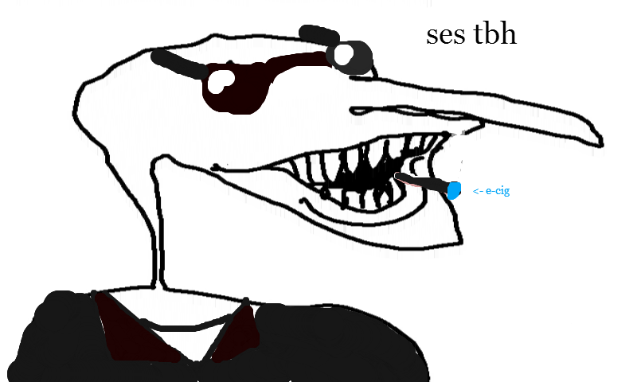

Obotma Commands
Table of Contents
About the Bot
A fun passion project for the boys. It started as a replacement to Groovy and Rhythm, and has evolved into a collection of random commands for the server. Meant to make repeated tasks easier, and to get a chuckle from time to time.. I'm always looking for cool things to develop with Obotma, so don't be afraid to !request stuff. Our screening process is pretty loose.
See the links below to see features in progress and the Future of Obotma.
Music
!play [url] : plays YouTube video from given url. Must be in a voice chat | Argument required? yes
!play [query] : searches and plays YouTube audio with given query. Must be in a voice chat | Argument required? yes
!pause: pauses current song
!resume: resumes song
!skip: skips to next song in the queue
!join: have a friend join you in voice chat
Requests
!request [text] : add a feature request to a queue, up to 15. Use without arguments to show the numbered list of requests | Argument required? no
!delete_request [number] : deletes request of given number | Argument required? yes
Memes
!pun: sends a random pun
!lenny [number] : sends given number of lennies. Defaults to 1 if number not provided. | Argument required? no
!meme: summons a random meme. Quality not guaranteed.
Dice Roller
!r XdY+Z: rolls X number of a dY and adds a modifer Z. Example: !r 3d6+5
!r stats: rolls character stats using 4d6 drop lowest method
Polls
Formatting for this one is very important
!poll {title} [Option 1] [Option 2] [Option 3] ... : creates a poll for the given options. Supports up to 9 options. Braces and brackets should be typed out | Argument required? yes
Risk of Rain 2
!swag [time] : creates a swag session and @s people to ask to swag at given time. clears previous swag ses. | Argument required? yes
!swaggers: shows list of people current interested in swagging
!random_swag [number] : randomizes characters for each current swaggers and randomly assigns [number] amount of artifacts. Default 0 artifacts if not provided. | Argument required? no
!artifact [text] : returns description for artifact name given in [text]. Should be just "Chaos" or "Vengeance", not "Artifact of [text]" | Argument required? yes
Scheduled Tasks
Daily message: sends a good-morning message with Today In History (events, births, and deaths), quote of the day, and random word of the day.
Miscellaneous
!ses: Gives the time, date, and location of the next ses
!nature [query] : fetches image related to query | Argument required? yes
!hug: send hugs
!help: Show this message
Admin Center
These functions require administrator permissions, or to be named CerealGuy69.
!delete_request 0: clears request list
!scan: gives emoji stats in current channel. WARNING: will take a while to run, and will return a lot of data!
In Progress
Features that are currently being worked on, in no particular order.
- Music improvement
- Loop function
- Show current queue
- Play YouTube playlists
- Word counter?
- Different commands and storage for different servers
- Bartender mode
- Football gameday hype
- Positive encouragement
- Server to-do list. Probably a bad idea.
- Emoji replacement votes
Future of Obotma
Long-term feature ideas and/or projects.
- Configure scheduled tasks, active commands,
- Integration with self-made AI chatbot
- Global launch